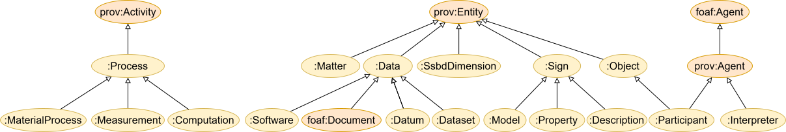
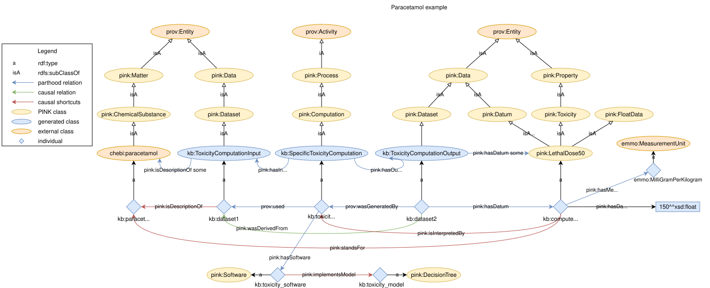

The PINK Annotation Schema#
The PINK Annotation Schema provides semantic annotations for the Safe and Sustainable by Design (SSbD) approach to guide the innovation process for chemicals and materials. It adhears to the recommendations specified by DCAT-AP 3.0.1 as implemented in Tripper, and builds on PROV-O for provenance. It is constructed to be easily aligned with EMMO.
[!WARNING] The PINK Annotation Schema is still under development and may change without notice. It is not intended for production at the current stage.
Resources#
Theoretical background.
Background, including handling of provenance and categorisation of relations into parthood, causal and semiotic relations.
Documentation of sub-modules:
Class-level documentation
Reference documentation with interlinked definitions of classes and properties for:
Reused terms, i.e. terms reused from existing vocabularies (e.g. PROV-O, DCAT-AP 3.0.1).
Matter, including categorisation of substances, materials, molecules, etc…
Models, including categorisation of statistical, physics and data-based (AI) models.
CHEMINF descriptors, a taxonomy of descriptors from mainly the chemistry domain
Guiding principles for the implementation of the PINK Annotation Schema
Turtle file including all imported concepts (source of truth).
Inferred turtle file reasoned with HermiT.
Top level taxonomy#
The taxonomy below shows a basic categorisation of the main concepts (OWL classes) in the PINK Annotation Schema. It unifies concepts from common vocabularies, like Dublin Core, PROV-O, DCAT and FOAF. This gives the adapted terms additional context. However, the taxonomy is intentionally weekly axiomated in order to facilitate alignment to different popular top-level ontologies, like EMMO, DOLCE and BFO.

Usage example#
The example below shows how one can document a toxicity computation using the PINK Annotation Schema.
